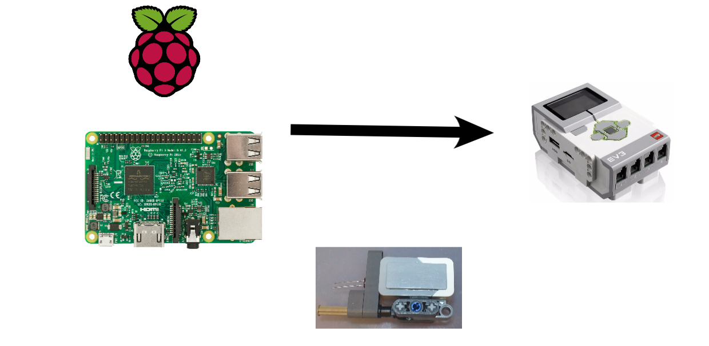

Rasberry Pi - The Brains
The Rasberry Pi powers the website. When you enter infomation into this website on the do it page, your infomation is sent to the rasberry pi acting as the server. Then some python script runs to flash leds in a morse code/binary type method.

Connection
They are connected through a GPIO pin powering an LED. Then the Lego Mindstorms Brick uses the color sensor to sense the the brighness and see what the led is doing and then use that to power the motors

The Mindstorms - The Brawn
The Lego Mindstorms brick runs the motors that move the stylus then presses the screen to open the chests.